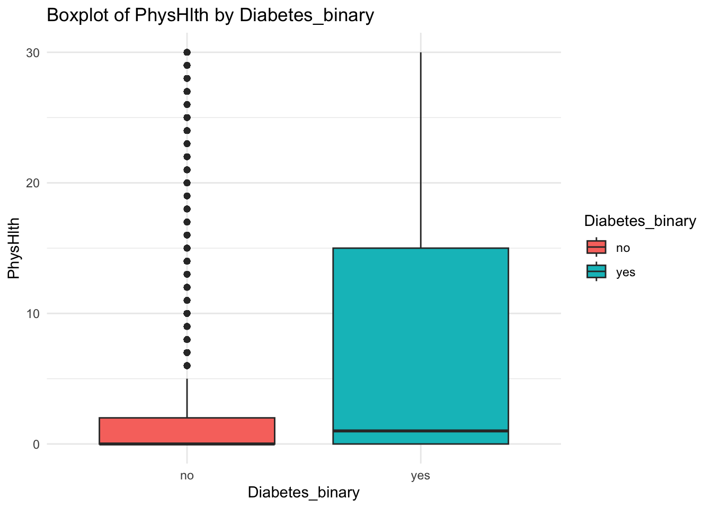

In this study, we utilize the diabetes_binary_health_indicators_BRFSS2015.csv data (from https://www.kaggle.com/datasets/alexteboul/diabetes-health-indicators-dataset) to investigate the relationships between diabetes status and a range of health-related variables.
The dataset comprises 218,334 individuals without diabetes and 35,346 individuals with diabetes, encompassing various demographic, behavioral, and health status indicators. The response variable is Diabetes_binary, which represent whether a person has diabetes or not. The data has other 21 variables as potential predictors. For example, whether an individual has high blood pressure (HighBP), whether an individual has high cholesterol (HighChol), whether an individual has ever had their cholesterol checked (CholCheck), Body Mass Index (BMI), whether an individual is a current smoker (Smoker), whether an individual has ever had a stroke (Stroke), whether an individual has ever had heart disease or a heart attack (HeartDiseaseorAttack), whether an individual has engaged in physical activity in the past month (PhysActivity), whether an individual consumes fruits daily (Fruits), whether an individual consumes vegetables daily (Veggies), whether an individual engages in heavy alcohol consumption (HvyAlcoholConsump), whether an individual has access to healthcare coverage (AnyHealthcare), whether cost has prevented an individual from visiting a doctor in the past year (NoDocbcCost), general health (GenHlth), mental health (MentHlth), physical health (PhysHlth), whether an individual has difficulty walking or climbing stairs (DiffWalk), age, sex, income, and education level.
The primary purpose of the exploratory data analysis is to uncover patterns, relationships, and potential factors associated with diabetes. By examining the distribution of these variables and their relationships with diabetes status, we aim to identify key indicators that might contribute to the presence of diabetes. The ultimate goal of our modeling efforts is to develop a predictive model that can accurately classify individuals as having diabetes or not based on their health and demographic profiles. This model can be valuable for early detection and prevention strategies, allowing healthcare providers to identify at-risk individuals and implement targeted interventions to manage or mitigate the risk of diabetes.
load necessary packages
library(tidyverse)
Warning: package 'ggplot2' was built under R version 4.2.3
Warning: package 'tidyr' was built under R version 4.2.3
Warning: package 'readr' was built under R version 4.2.3
Warning: package 'dplyr' was built under R version 4.2.3
── Attaching core tidyverse packages ──────────────────────── tidyverse 2.0.0 ──
✔ dplyr 1.1.4 ✔ readr 2.1.5
✔ forcats 1.0.0 ✔ stringr 1.5.0
✔ ggplot2 3.5.1 ✔ tibble 3.2.1
✔ lubridate 1.9.3 ✔ tidyr 1.3.1
✔ purrr 1.0.1
── Conflicts ────────────────────────────────────────── tidyverse_conflicts() ──
✖ dplyr::filter() masks stats::filter()
✖ dplyr::lag() masks stats::lag()
ℹ Use the conflicted package (<http://conflicted.r-lib.org/>) to force all conflicts to become errors
library(caret)
Loading required package: lattice
Attaching package: 'caret'
The following object is masked from 'package:purrr':
lift
library(corrplot)
corrplot 0.92 loaded
library(dplyr)
Data
read in data and check data structure.
# read data with relative pathdata <-read.csv("./diabetes_binary_health_indicators_BRFSS2015.csv") # view data structurestr(data)
The data has been read successfully and no missing values were observed. However, many variables are coded numerically but they should be categorical data. Let’s convert those variables to factors with meaningful level names.
# select variables that should be converted to 0/1 coded factorsNo_factor<-c(1:4, 6:14, 18) # Define the levels and labelslevels_0_1 <-c(0, 1)labels_no_yes <-c("no", "yes")# Convert the selected variables to factors with levels 0 and 1 and labels No and Yesdata[, No_factor] <-lapply(data[, No_factor], function(x) {factor(x, levels = levels_0_1, labels = labels_no_yes)})# Convert demographic variables to factors with labelsdata <- data |>mutate (Sex=factor(Sex, levels=c(0,1), labels=c("female","male")),Age=factor(Age, levels=c(1:13), labels=c("18-24","25-29","30-34","35-39","40-44","45-49","50-54","55-59","60-64","65-69","70-74","75-79","80 or older")),Education=factor(Education, levels=c(1:6), labels=c("Never attended school or only kindergarten","Elementary", "Some high school", "High school graduate","Some college or technical school", "College graduate")),Income=factor(Income, levels=c(1:8), labels=c("less than $10,000","$10,000 to less than $15,000","$15,000 to less than $20,000","$20,000 to less than $25,000","$25,000 to less than $35,000","$35,000 to less than $50,000","$50,000 to less than $75,000","$75,000 or more")))str(data) # check data structure
Diabetes_binary HighBP HighChol CholCheck BMI
no :218334 no :144851 no :146089 no : 9470 Min. :12.00
yes: 35346 yes:108829 yes:107591 yes:244210 1st Qu.:24.00
Median :27.00
Mean :28.38
3rd Qu.:31.00
Max. :98.00
Smoker Stroke HeartDiseaseorAttack PhysActivity Fruits
no :141257 no :243388 no :229787 no : 61760 no : 92782
yes:112423 yes: 10292 yes: 23893 yes:191920 yes:160898
Veggies HvyAlcoholConsump AnyHealthcare NoDocbcCost GenHlth
no : 47839 no :239424 no : 12417 no :232326 Min. :1.000
yes:205841 yes: 14256 yes:241263 yes: 21354 1st Qu.:2.000
Median :2.000
Mean :2.511
3rd Qu.:3.000
Max. :5.000
MentHlth PhysHlth DiffWalk Sex Age
Min. : 0.000 Min. : 0.000 no :211005 female:141974 60-64 :33244
1st Qu.: 0.000 1st Qu.: 0.000 yes: 42675 male :111706 65-69 :32194
Median : 0.000 Median : 0.000 55-59 :30832
Mean : 3.185 Mean : 4.242 50-54 :26314
3rd Qu.: 2.000 3rd Qu.: 3.000 70-74 :23533
Max. :30.000 Max. :30.000 45-49 :19819
(Other):87744
Education
Never attended school or only kindergarten: 174
Elementary : 4043
Some high school : 9478
High school graduate : 62750
Some college or technical school : 69910
College graduate :107325
Income
$75,000 or more :90385
$50,000 to less than $75,000:43219
$35,000 to less than $50,000:36470
$25,000 to less than $35,000:25883
$20,000 to less than $25,000:20135
$15,000 to less than $20,000:15994
(Other) :21594
EDA & Summarizations
Summarize data and do some exploratory data analysis. First, let’s focus on categorical variables:
# Plotting function for categorical variablesplot_categorical <-function(var) {ggplot(data, aes_string(x = var, fill ="Diabetes_binary")) +geom_bar(position ="dodge") +labs(title =paste("Distribution of", var, "by Diabetes_binary"), x = var, y ="Count") +theme_minimal()}# List of categorical variablescategorical_vars <-c("HighBP", "HighChol", "CholCheck", "Smoker", "Stroke","HeartDiseaseorAttack", "PhysActivity", "Fruits", "Veggies", "HvyAlcoholConsump", "AnyHealthcare","NoDocbcCost", "DiffWalk", "Age", "Sex", "Education", "Income")# Plot each categorical variablefor (var in categorical_vars) {print(plot_categorical(var))}
Warning: `aes_string()` was deprecated in ggplot2 3.0.0.
ℹ Please use tidy evaluation idioms with `aes()`.
ℹ See also `vignette("ggplot2-in-packages")` for more information.
Based on the above plots, we can find potential drivers of Diabetes_binary include:
- HighBP:A higher proportion of individuals with diabetes have high blood pressure compared to those without diabetes.
- HighChol: High cholesterol is more prevalent among those with diabetes.
- CholCheck: Most individuals, both with and without diabetes, have had their cholesterol checked, but it is slightly higher among those with diabetes.
- Stroke: Stroke is more common in individuals with diabetes compared to those without.
- HeartDiseaseorAttack: Heart disease or attack is more common among individuals with diabetes.
- PhysActivity: Physical activity is less common among individuals with diabetes.
- Fruits: Lower consumption of fruits is associated with diabetes.
- Veggies: Lower consumption of vegetables is associated with diabetes.
- HvyAlcoholConsump: Heavy alcohol consumption is less common among individuals with diabetes.
- DiffWalk: Difficulty walking is more common among individuals with diabetes.
- Age: More elder people have diabetes than younger people.
- Education: Among those with high education level, less portion of people got diabete.
- Income: Diabetes is more common among individuals with low income.
Then, let’s plot the numeric variables:
# Plotting function for continuous variablesplot_continuous <-function(var) {ggplot(data, aes_string(x ="Diabetes_binary", y = var, fill ="Diabetes_binary")) +geom_boxplot() +labs(title =paste("Boxplot of", var, "by Diabetes_binary"), x ="Diabetes_binary", y = var) +theme_minimal()}# List of continuous variablescontinuous_vars <-c("BMI", "GenHlth", "MentHlth", "PhysHlth")# Plot each continuous variablefor (var in continuous_vars) {print(plot_continuous(var))}

Based on the above plots, we can find potential drivers of Diabetes_binary include:
- BMI:Individuals with diabetes have higher BMI compared to those without diabetes.
- GenHlth: General health is rated worse among individuals with diabetes.
- MentHlth: Mental health is slightly poorer among individuals with diabetes.
- PhysHlth: Physical health is poorer among individuals with diabetes.
Lastly, let’s see the correlation plot for all variables:
# Convert categorical variables to numerical codesdata_numeric <- data |>mutate_if(is.factor, as.numeric)# Compute the correlation matrixcorrelation_matrix <-cor(data_numeric, use ="complete.obs")# Generate the correlation plotcorrplot(correlation_matrix, method ="color", tl.cex =0.8,col =colorRampPalette(c("red", "white", "blue"))(200),type ="upper", diag =FALSE)
Based on all the above plots, the potential drivers of Diabetes_binary include:
- High Blood Pressure (HighBP)
- High Cholesterol (HighChol)
- Body Mass Index (BMI)
- Stroke
- Heart Disease or Attack (HeartDiseaseorAttack)
- Physical Activity (PhysActivity)
- Fruits Consumption (Fruits)
- Vegetables Consumption (Veggies)
- Heavy Alcohol Consumption (HvyAlcoholConsump)
- General Health (GenHlth)
- Mental Health (MentHlth)
- Physical Health (PhysHlth)
- Difficulty Walking (DiffWalk)
- Age
- Education
- Income